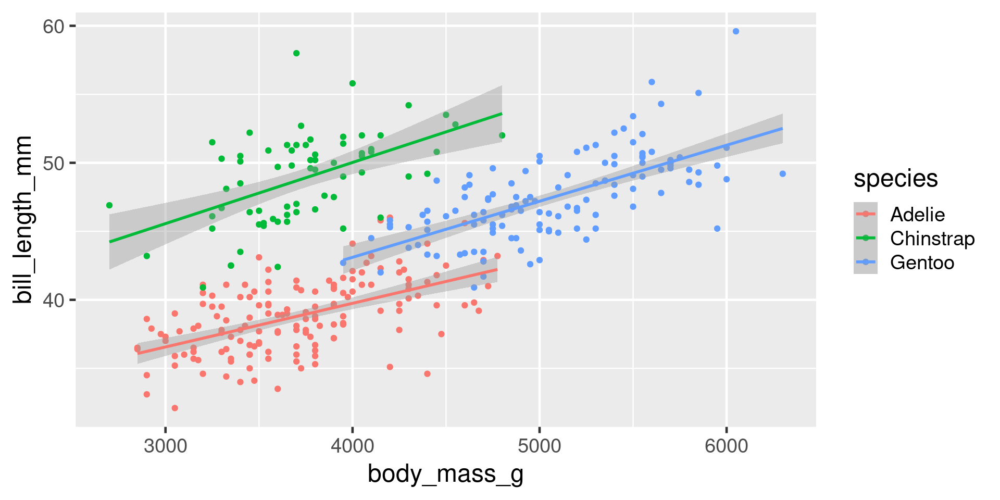
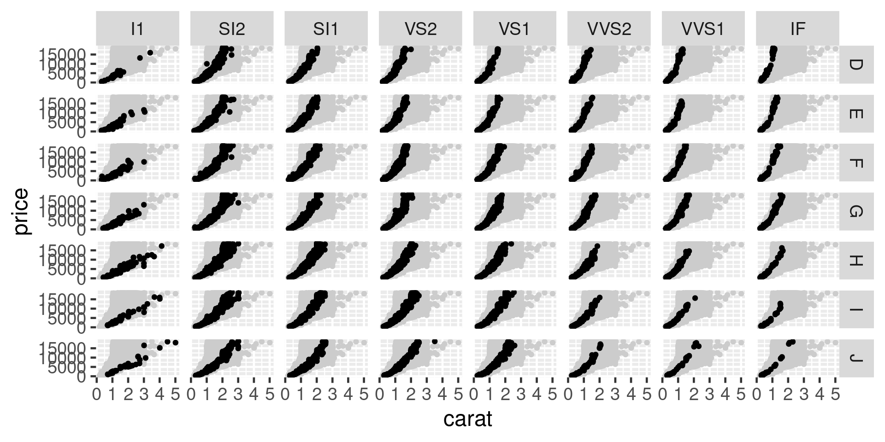
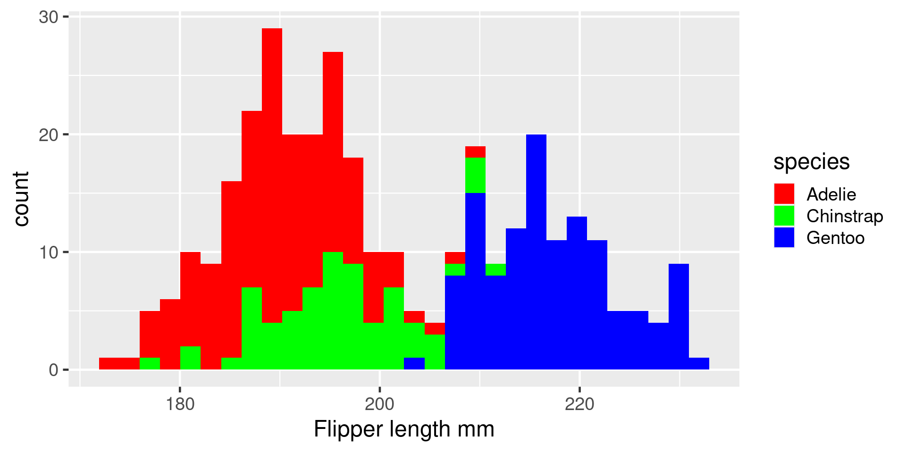
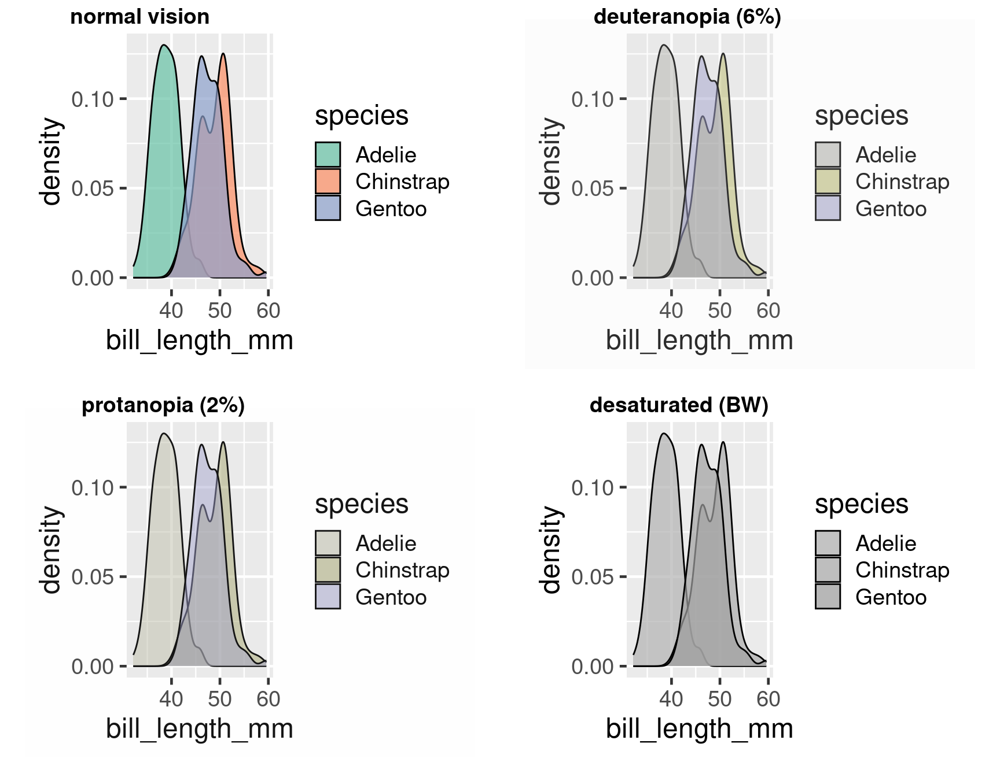

Data visualisation
Bio300B Lecture 4
Richard J. Telford (Richard.Telford@uib.no)
Institutt for biovitenskap, UiB
8 September 2025
Data visualisation
A picture is worth a thousand words
Tell a story with figures
Avoid common mistakes
“reflect the data, tell a story, and look professional” Wilke
ggplot2
one of at least three schemes for graphics in R
part of tidyverse
A system for ‘declaratively’ creating graphics, based on “The Grammar of Graphics”.
You provide the data, tell ‘ggplot2’ how to map variables to aesthetics, what graphical primitives to use, it takes care of the details.
ggplot in action
<- ggplot (data = penguins, # Data mapping = aes ( # Aesthetics x = body_mass_g, y = bill_length_mm, colour = species)) + geom_point () + # Geometries scale_colour_brewer (palette = "Set2" ) + # scales labs (x = "Body mass, g" , # labels y = "Bill length mm" , colour = "Species" ) + theme_bw () # themes # Also facets
Data
Tibble or data frame with data to be plotted.
Tidy data
Can process data within ggplot but usually best to do it first
Can add data to the whole plot or to individual geoms
<- penguins |> group_by (species) |> summarise (body_mass_g = mean (body_mass_g, na.rm = TRUE ), bill_length_mm = mean (bill_length_mm, na.rm = TRUE ) )ggplot (penguins, aes (x = body_mass_g, y = bill_length_mm, colour = species)) + geom_point () + geom_text (aes (label = species), data = penguin_summary, colour = "black" )
Aesthetics
mapping specifies which variables in the data should be mapped onto which aesthetics with aes()
Each geom takes different aesthetics
Common aesthetics
x, y
fill, colour, alpha
shape
linetype
group
Setting vs mapping
Mapping in aes()
ggplot (penguins, aes (x = flipper_length_mm, fill = "blue" )) + geom_histogram ()
Setting in the geom
ggplot (penguins, aes (x = flipper_length_mm)) + geom_histogram (fill = "blue" )
geoms
Use different geoms for different plot types
Important geoms
geom_point()geom_boxplot()geom_histogram()geom_smooth()geom_line()geom_text()
Many geoms, some in extra packages
Geoms to show distributions
Histogram
Count how many observations in each bin
ggplot (penguins, aes (x = flipper_length_mm)) + geom_histogram ()
Critical question - how many bins? Set with bins argument
= Inputs. range (1 , 50 ], label : "Number of bins" , step : 1 , value : 30 }, = Inputs. select ("flipper_length_mm" , "bill_length_mm" , "bill_depth_mm" , "body_mass_g" ], label : "Measure" }; = Inputs. select ("Adelie" , "Chinstrap" , "Gentoo" ], label : "Species" };
do_penguins_hist (species, measure2, bins);
Density
Smoothed histograms
ggplot (penguins, aes (x = flipper_length_mm)) + geom_density ()
adjust argument adjusts bandwidth to control how smooth
= Inputs. range (0.1 , 2 ], label : "Adjust density" , step : 0.1 , value : 1 }, = Inputs. select ("flipper_length_mm" , "bill_length_mm" , "bill_depth_mm" , "body_mass_g" ], label : "Measure" };
do_penguins_density (measure, adjust);
Geoms to show many distributions
<- ggplot (penguins, aes (x = species, y = flipper_length_mm))<- base + stat_summary (fun = "mean" , geom = "col" )<- base + geom_boxplot (aes (fill = species))<- base + geom_violin (aes (fill = species))<- base + geom_jitter (aes (colour = species))library (ggbeeswarm)<- base + geom_quasirandom (aes (colour = species))<- base + geom_violin (aes (fill = species), alpha = 0.3 ) + geom_quasirandom (aes (colour = species))
Boxplots can mislead
<- datasauRus:: box_plots |> pivot_longer (everything ()) |> ggplot (aes (x = name, y = value))+ geom_boxplot () + + geom_violin ()
geoms for scatterplots
ggplot (penguins, aes (x = body_mass_g, y = bill_length_mm, colour = species)) + geom_point () + geom_smooth (method = "lm" )

Scales
Control how
variables are mapped onto the aesthetics
axes breaks
All called scale_aesthetic_description
scale_x_log()scale_y_reverse()scale_colour_viridis_c()scale_shape_manual()
Labels
plot, axis and legend titles
ggplot (penguins, aes (x = body_mass_g, y = bill_length_mm, colour = species)) + geom_point () + labs (x = "Body mass g" ,y = "Bill length mm" , colour = "Species" , title = "Bill length against body mass " )
Facets
Split data into separate panels.
+ facet_wrap (facets = vars (species))
facet_grid() for two dimensional arrays of subplots
+ facet_grid (rows = vars (species),cols = vars (island)

Themes
Change how non-data elements of the plot look
Entire themes
Themes
Can also change individual elements
+ theme (legend.position = "top" )
Removing elements
+ theme (panel.grid = element_blank ())
Avoid primary colours
ggplot (penguins, aes (x = flipper_length_mm, fill = species)) + geom_histogram () + scale_fill_manual (values = c ("red" , "green" , "blue" )) + labs (x = "Flipper length mm" )

Colour deficient vision
<- ggplot (penguins, aes (x = bill_length_mm, fill = species)) + geom_density (alpha = 0.7 )
:: cvdPlot (den)
#End rainbow
Better colour scale
<- ggplot (penguins, aes (x = bill_length_mm, fill = species)) + geom_density (alpha = 0.7 ) + scale_fill_brewer (palette = "Set2" )
:: cvdPlot (den)

Using colour effectively
Choose an appropriate palette.
Qualitative palettes
:: display.brewer.all (type = "qual" )
Sequential palettes
:: display.brewer.all (type = "seq" )
Dividing palettes
:: display.brewer.all (type = "div" )
Viridis
ggplot (penguins, aes (x = body_mass_g, y = flipper_length_mm)) + geom_point (aes (colour = flipper_length_mm)) + scale_colour_viridis_c ()
Highlight
ggplot (penguins, aes (x = body_mass_g, y = flipper_length_mm)) + geom_point (colour = "red" ) + :: gghighlight (species == "Chinstrap" )
Redundant encoding
ggplot (penguins, aes (x = body_mass_g,y = flipper_length_mm,colour = species,shape = species)) + geom_point ()
Avoiding legends
library (directlabels)direct.label (plot)
Avoiding overplotting
Problem - points plot on top of each other.
also jitter for ~discrete data
Most common mistake in presentations
Summary
If you can imagine it, you can plot it
Whole ecosystem of packages to help
Further reading